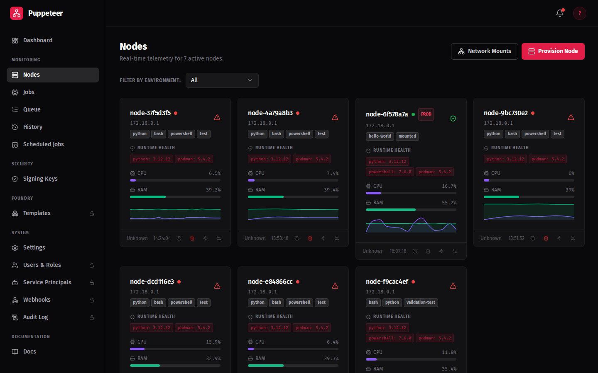

Nodes
Nodes are the worker machines that execute jobs. Each node runs the Axiom puppet agent, which enrolls via mTLS and polls for assigned work.
Node States
| State | Meaning |
|---|---|
ONLINE |
Node is healthy and accepting new job assignments |
OFFLINE |
Node has missed recent heartbeats — no new jobs assigned |
DRAINING |
Node is being taken out of service — no new jobs assigned, but it completes already-assigned jobs |
REVOKED |
Node certificate revoked — blocked from enrolling or pulling work |
TAMPERED |
Attestation failure — node excluded until reviewed |
The Nodes view
The Nodes page provides live status for all enrolled nodes, including capability tags and resource utilisation:

DRAINING State
Use the DRAINING state to gracefully remove a node from the job pool without losing in-flight work.
To drain a node (requires nodes:write permission):
From the dashboard — open the node detail drawer and click Drain. The node status changes to DRAINING immediately.
Via the API:
curl -X PATCH https://your-host/api/nodes/{node_id}/drain \
-H "Authorization: Bearer $TOKEN"
What happens while draining:
- The node stops receiving new job assignments
- Jobs already assigned continue executing normally
- Heartbeats from the node do NOT revert it back to
ONLINE— the DRAINING state persists until explicitly cleared - Other nodes absorb new job assignments
To undrain a node:
From the dashboard — click Undrain in the node detail drawer.
Via the API:
curl -X PATCH https://your-host/api/nodes/{node_id}/undrain \
-H "Authorization: Bearer $TOKEN"
Safe rolling upgrades
DRAINING is the recommended way to take a node offline for maintenance or a software upgrade. Drain the node, wait for in-flight jobs to finish, upgrade the agent, then undrain.
Node Detail Drawer
Click any node in the Nodes view or Queue Monitor to open its detail drawer, which shows:
- Current health metrics (CPU, RAM) with a sparkline history
- Assigned and recently completed jobs
- Enrollment timestamp and certificate serial
- Drain / Undrain controls
Queue Monitor
The Queue Monitor (accessible from the Jobs view) shows live per-node job queues via WebSocket. See Jobs for details.